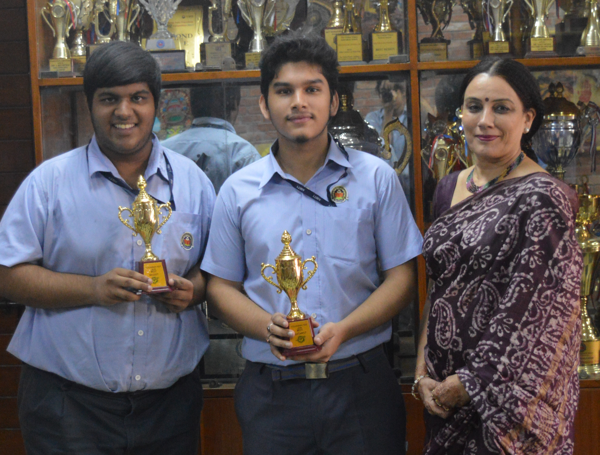
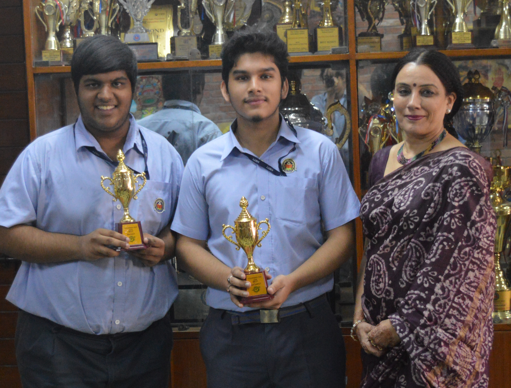

Mannat Bhalla, Ananya Sharma and Simran Joshi bagged the first position in the Russian vocal singing competition. They were invited by the judges to the Russian Embassy to sing for the celebration of the 75th anniversary of their victory in the Great Patriotic War in May.
2019-20
DYNAMICS
Students of the western music society participated in Dynamics held at DPS RK Puram on the 27th and
28th of April 2019. Our school band secured the 3rd position and choir secured the 2nd position for their
exemplary showcase of talent.
LITERATI
At Literati Fest held at AIS Gurugram 46 on 16th of August, our choir secured the 2nd position in the
German song category for their proficiency in both-fluency of language and techniques involved in
singing.
BRO. BERGINS
Bro. Bergin’s Meet was organized at Mt. St. Mary’s school on the 22nd of August in which our school
band secured the 2nd position and Ayan Sharma of class XI won the individual prize for Best Drummer.
CADENCE
At Cadence, organized by St. Columbus School on 18th of October, our school band put up an excellent
performance and secured the 2nd position in the band category. Apratim Kakoty and Karthik Suresh of
class XI won the individual prizes for Best Guitarist and Best Bassist respectively.
CRESCENDO
Crescendo, one of the best inter-school western music competition was hosted at our school by the
Western Music Society on the 25th and 26th of July 2019. Devashish Gupta of class XII and Ayan Sharma of
class XI won the individual prizes for Best Guitarist and Best Drummer respectively.
SAPTAK
At Saptak held at St. Joseph and Mary School on 22nd August 2019,our school band secured the 3rd
position and Apratim Kakoty of class XI won the award for Best Guitarist.
Thunder
At Thunder held at DPS Noida school on the 8th of november, our school put up an excellent performance. They secured 3rd position.
WIRED
At Wired held at Heritage school on the 16th of August, Ayan Sharma of class XI won the award for Best
Drummer and Apratim Kakoty of class XI won the award for Best Guitarist for their exceptional skills.


 
